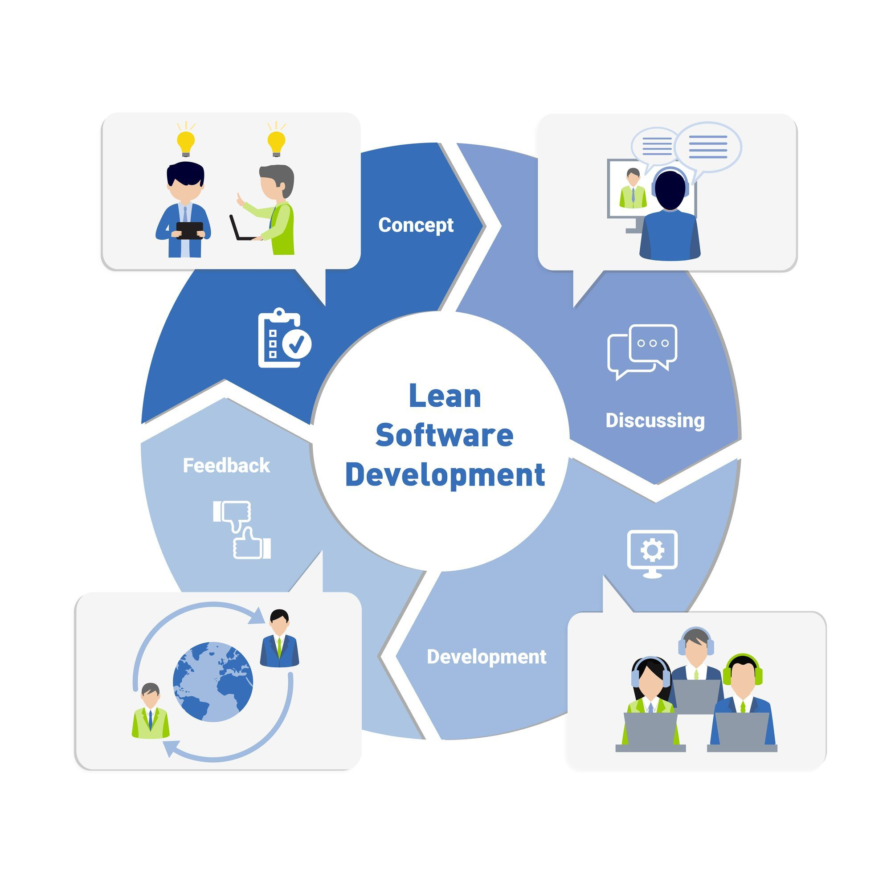

What is it?
Lean software development is a concept that emphasizes optimizing efficiency and minimizing waste in the software development process. This approach has its roots in the Lean manufacturing movement of the 1980s. However, it is now considered an integral part of the Agile software development methodology.
Where is it used?
Pros and Cons
| Pros | Cons |
|---|---|
| Eliminates wasteful practices, leading to efficiency improvements and cost savings | Implementation may face resistance from teams accustomed to traditional methods |
| Focuses on delivering value to customers, resulting in more satisfied users | Requires teams to adapt to new principles and practices, which can take time |
| Empowers the development team to make decisions, which can also boost morale | Heavily depends on the team involved, making it not as scalable as other frameworks |
| Streamlined approach allows more functionality to be delivered in less time | Strong documentation is required, and failure to do so may result in mistakes |
Source: TechTarget